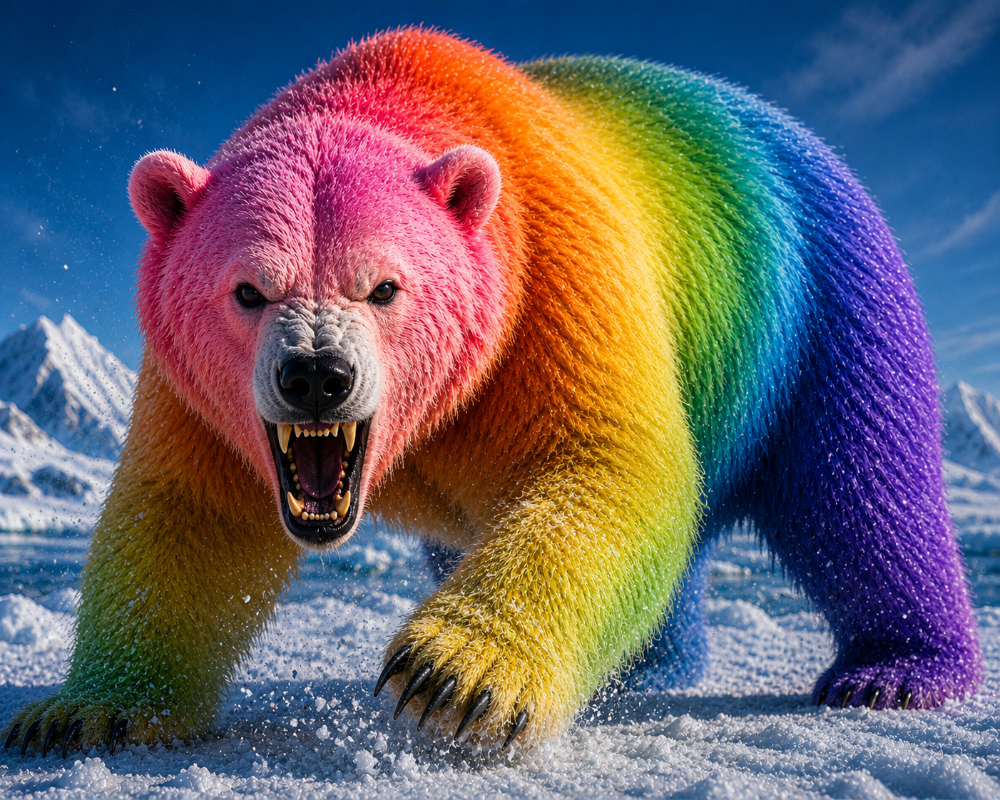
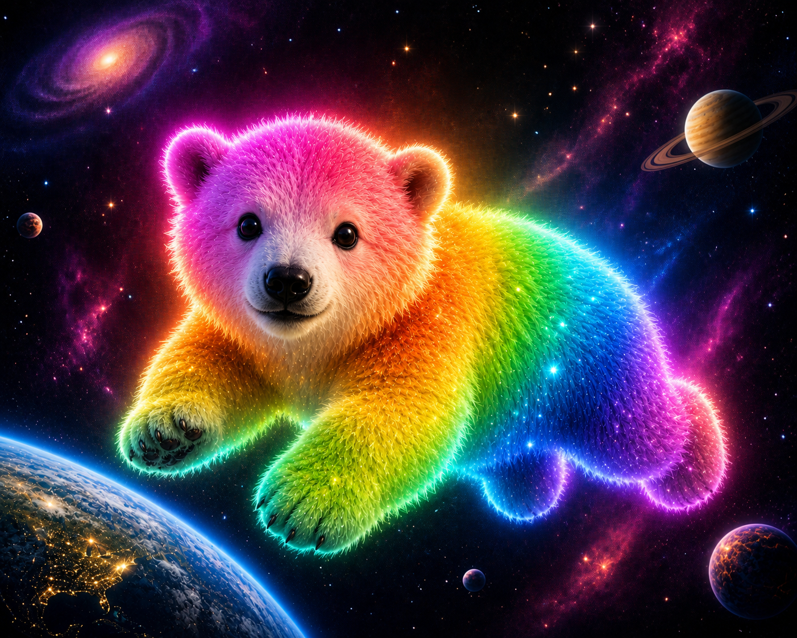

Far beyond the edges of the known sky, where stars drifted like frozen sparks across endless darkness, there lived a creature older than worlds. A polar bear made of light. Its fur shimmered with flowing colors—reds, blues, greens, golds—moving across its body like living auroras. Wherever it traveled, space itself glowed behind it. And beside it floated a small cub. The baby bear was smaller than a moon, with soft rainbow light glowing from its tiny paws. It followed its parent through the stars, learning the silent paths between galaxies. For a long time, the great bear protected dying suns and wandered peacefully through the universe. Until it discovered Earth. At first, it only watched from the darkness above the planet. It saw smoke rising into the sky. Oceans filled with plastic. Forests burned. Lights spread across the world like a sickness. The great polar bear became furious. To the creature, Earth looked infected. Broken. And one night, the sky split open. People across the world looked upward as rivers of rainbow light poured through the clouds. Satellites failed. Oceans trembled. The northern lights spread across every continent as something massive descended from space. The polar bear had come. Cities lost power as the creature walked across the atmosphere itself, its glowing paws leaving trails of burning color across the sky. Fighter jets vanished in flashes of white light when they got too close. The world panicked. But far above Earth, hidden among distant stars, the baby polar bear remained behind. Watching. Waiting. Unlike its parent, the cub did not see only destruction on Earth. It saw music. Stories. Animals. Children staring upward in wonder instead of fear. And for the first time, the baby bear began drifting slowly toward the planet… unsure whether to save humanity— or join the attack. .

